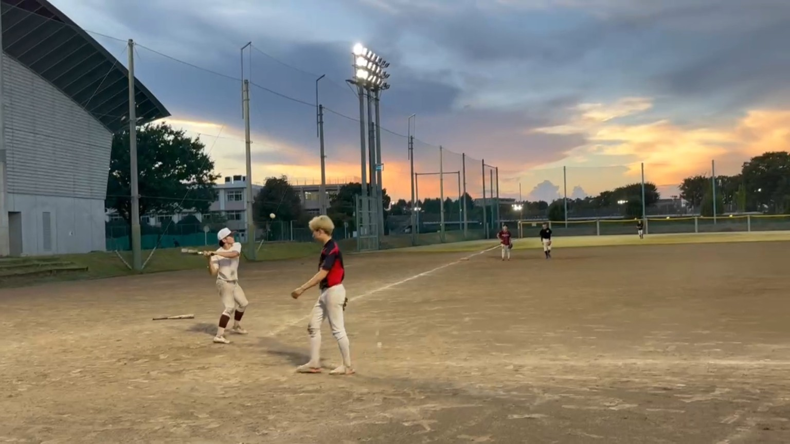
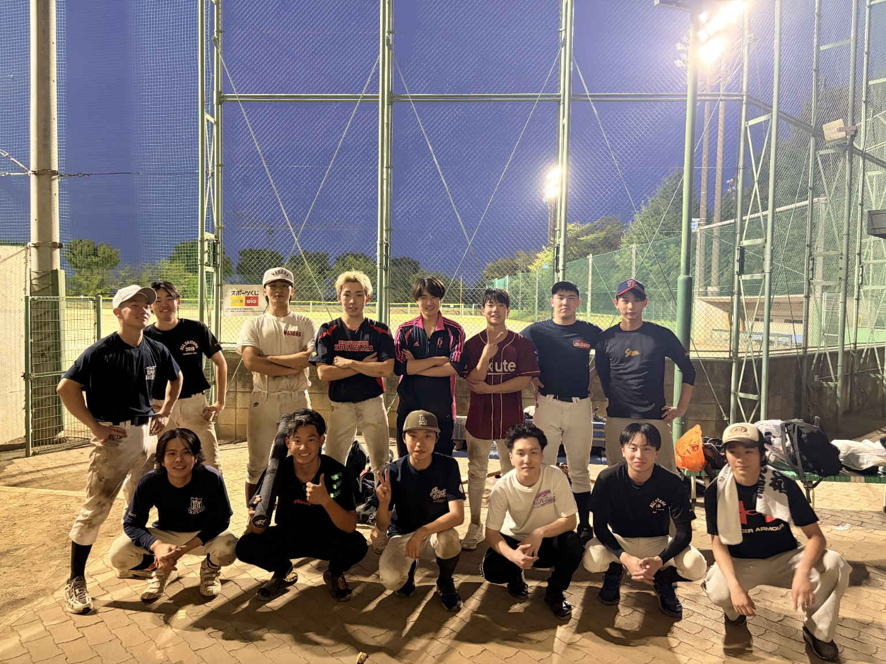

夏の日差しが強くなり、いよいよ夏本番という感じですが、 皆さまいかがお過ごしでしょうか？
フットサルチームとして活動してきたChroMatesですが、 実はチームメンバーの半分が野球部出身なんです！ そこで今回は、ChroMates番外編として野球の大会に出場しました！

試合では、川口選手と内海選手のバッテリーが相手打線を苦しめ、 粘り強い守備で試合を進めました。
そして終盤、永田選手が振り逃げから三塁まで進出。 そのチャンスで中窪選手が逆転ホームランを放ち、 2-0で勝利することができました！
この結果、予選を2位で通過し、 3か月後に行われる決勝トーナメントへの進出が決定しました。

決勝トーナメントに向けて、 これからもフットサルと野球を両立しながら、 ChroMatesらしく楽しく練習していきたいと思います！
ChroMatesでは、運動経験の有無にかかわらず 新しい参加者を募集しています。 少しでも興味がある方は、ぜひ見学だけでもご参加ください！